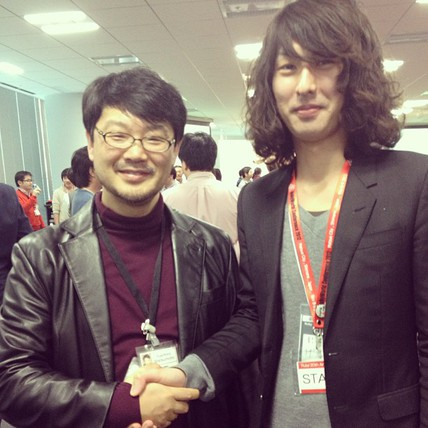
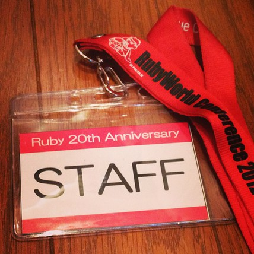

Ruby 20 周年記念パーティーレポート ―― プログラミング初心者の運営スタッフが見た Ruby コミュニティ
書いた人：鈴木雄大(@nekogeruge_987)
Ruby 20 周年記念パーティーレポート
2013 年 2 月 23 日、Ruby の 20 歳の誕生日 (の前日) を祝う会が開催され、ボランティアスタッフとして参加してきましたので、レポートさせていただきます。
筆者は Ruby はおろか、プログラミングを本格的に勉強し始めて 1 年経っていない Newbie です。shibuya.rb や東京 Ruby 会議などの Ruby に関するイベントや勉強会へ参加するうちに、自身も Ruby コミュニティに貢献したいと考えるようになり、今回のイベントのボランティアスタッフに応募しました。
イベントスタッフであったために全ての講演を見られなかった事もあり、内容は薄いのですが、プログラミング初心者の視点から Ruby コミュニティの印象をレポートさせていただきます。読んでいただけると幸いです。
開催概要
- 開催日
- 2013 年 2 月 23 日 (土)
- 開催場所
- 楽天タワー 2 号館 (東京都品川区東品川4-13-9)
- 公式サイト
- http://ruby20th.herokuapp.com/
- 参加者
- 200 人くらい
- プログラム
- 公式サイトを参照
集合
開場は 13:15 ですが、スタッフとしての参加なので会場には午前中に向かいました。会場に到着すると、コミッターミーティングを終えた Ruby コミッターの方々が数名到着していました (パーティーの前に開発者会議があったようです)。「いつもコミッターの方々のブログに助けられてます。ありがとうございます。」とお礼を言いたくなります。よく見ると、その中に Matz がいます。生で見るのは初めてでした。
11:30 になるとスタッフの集合がかけられ、打合せがはじまりました。
ボランティアスタッフの主な仕事は受付、誘導、設営です。打合せの結果、自分は受付を担当することになりました。200 名超の参加者をさばききれるかと不安でしたが、他の受付スタッフが提案した「参加者名簿にインデックスを記入する」という素晴らしいアイディアもあり、ピーク時も滞留なく受付を行えました。
受付を行っていて感じたのが、参加者の年齢の幅が広いことです。自分が Web 業界にいることもあり、Rubyist は 20 〜 30 代の方が多いと思っていましたが、それ以上の年代の方も多く見受けられました。
祝辞と言う名の LT
受付のピークが過ぎ、受付は最小限のメンバーでの交代制となり、「御祝辞コーナー」の頃にはスタッフも交代でパーティーに参加することができました。パーティー会場に向かうと、参加者は既にできあがっていて和やかな雰囲気でした。
「御祝辞コーナー」は祝辞と言いつつライトニングトークス (LT) 形式で、時間が来ると容赦無くドラが鳴ってスピーチが打ち切られ、その度に会場は笑いに包まれました。スピーチ終了の合図であるドラを鳴らす「ドラ娘」は楽天の方が担当してくださっており、綺麗な方なのでオーディエンスもご満悦の様子でした。
スタッフ業務もあり全ての祝辞を見ることはできませんでしたが、その中でも印象に残ったのが、ただただしさんの「個人をエンパワーしてきた Ruby」でした。恥ずかしながら tDiary をこの場で初めて知ったのですが、オープンソースが多くの人に影響を与えることを実感し、自分も早くコードで世の中に貢献できるようになりたいと思いました。
RubyFriends
Matz と RubyFriends
- 交流フリータイム中、Matz がドリンクを取りにきたのを見計らい、RubyFrinds をお願いした所、快く応じてくれました！
- 
私が Matz に RubyFriends をお願いしたのがきっかけとなり、「俺も俺も」と人が集まり始め、あれよあれよと RubyFriends 大会となりました。さらにプチサイン会も始まり、技術書や中には Mac にサインしてもらっている強者もいました。自分も「たのしい Ruby」を持ってくれば良かったと後悔。Matz は気さくにサインや撮影に応じてくれたので、Matz が参加するイベントでは積極的に話しかけることをおすすめします。またサインしてもらう物を用意しておくとベターです。
池澤あやかさん と RubyFriends
さらに「話題の Ruby アイドル」こと池澤あやかさんとも RubyFriends していただきました。マネージャーさんに止められるかと思いつつ恐る恐るお願いした所、快く応じてくれました。少しだけ会話をしましたが、普通の年相応の女の子という印象を受けました。Matz 以上に話しかける難易度が高いと思いますが、会う機会があればぜひ話しかけてみてください。テレビや写真で見るよりもずっと綺麗です！

※ツーショットよりも池澤さん単体の方が需要があると思いますので、単体の写真で。
また、るびま読者にはおなじみかと思いますが、RubyFriends をする際には、iPhone アプリの RubyFriendsCamera が便利です。
撤収
- スタッフとしての締めの仕事は会場の撤収です。撤収は会場を提供いただいた楽天の吉岡さんの仕切りにより、スムーズに完了しました。Rubyist は勉強会等イベント参加率が高そうなので、全体的に運営は小慣れているように感じました。スタッフを示すネックストラップは記念にいただきました。RubyWorld Conference 2012 のもので、「秘密結社鷹の爪」などで有名な小野亮さんのイラスト入りです。
- 
感想
Ruby 20 周年記念パーティーにスタッフとして参加することで、Ruby コミュニティの雰囲気を感じ取ることができた気がします。
これまではハッカーが多数いるオープンソースの世界は天下一武道会のようで近寄りがたいイメージでしたが、実は自分が思っているよりもずっと身近で、一歩踏み出せばすぐに参加できる世界なのだと感じました。これからもツールを利用したりコードを書くだけではなく、こうしたイベントの運営なども通して積極的に Ruby コミュニティに関わっていけたらと思います。
Ruby コミュニティは初心者も寛容に受け入れてくれる雰囲気があると思います。「自分は初心者だから」と気が引けている方がこのレポートを読んで、色々な Ruby コミュニティのイベントに積極的に関わるきっかけになれば幸いです。
- ここまでお読みいただき、ありがとうございました。またどこかの Ruby コミュニティのイベントでお会いしましょう！

撮影: @kawaguti さん
著者について
鈴木雄大 (@nekogeruge_987)
とある炎上プロジェクトの火消しの為に独学で SQL を学び、気がついたら DBA に。プログラミングを学ぶにあたり、どの言語を勉強しようか迷っていた所、Rubyist の影響を受けて Ruby を勉強し始め、今に至る。